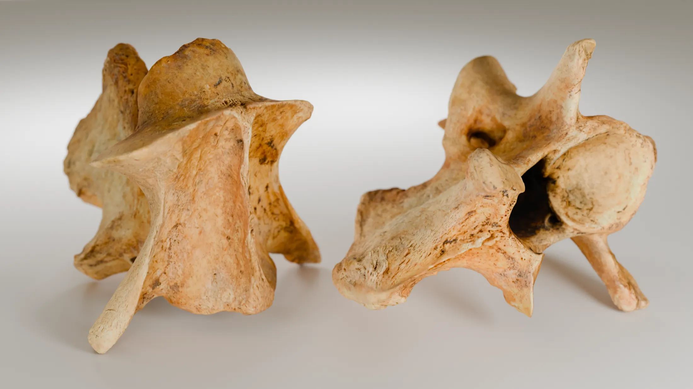

Photographing archaeological objects such as bones can be challenging due to their fragility and the handling constraints this implies. These limitations often hinder the production of high-quality, detailed images necessary for scientific documentation and communication.
To overcome this, I create high-resolution 3D models using photogrammetry. These digital twins can be manipulated freely without physical risk. By enabling researchers to visualize, manipulate, and compare virtual reconstructions, it becomes easier to test hypotheses, illustrate restoration proposals, and communicate interpretations.
By simulating realistic lighting and camera setups, I create photorealistic renders that combine scientific accuracy with visual impact. This approach opens up new possibilities for scene composition and presentation, producing images suitable for high-end publications, exhibition catalogues, and educational materials.